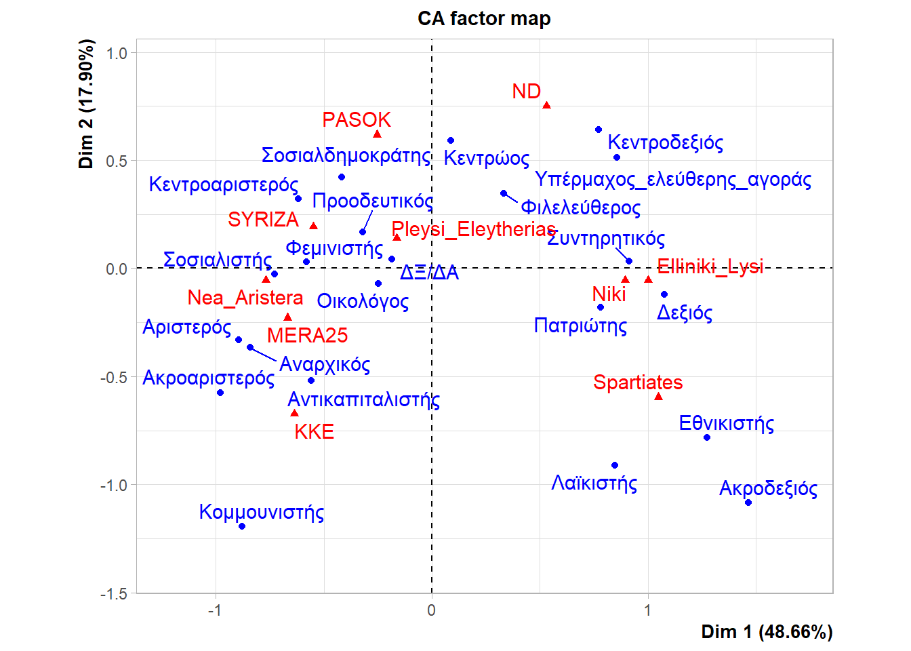
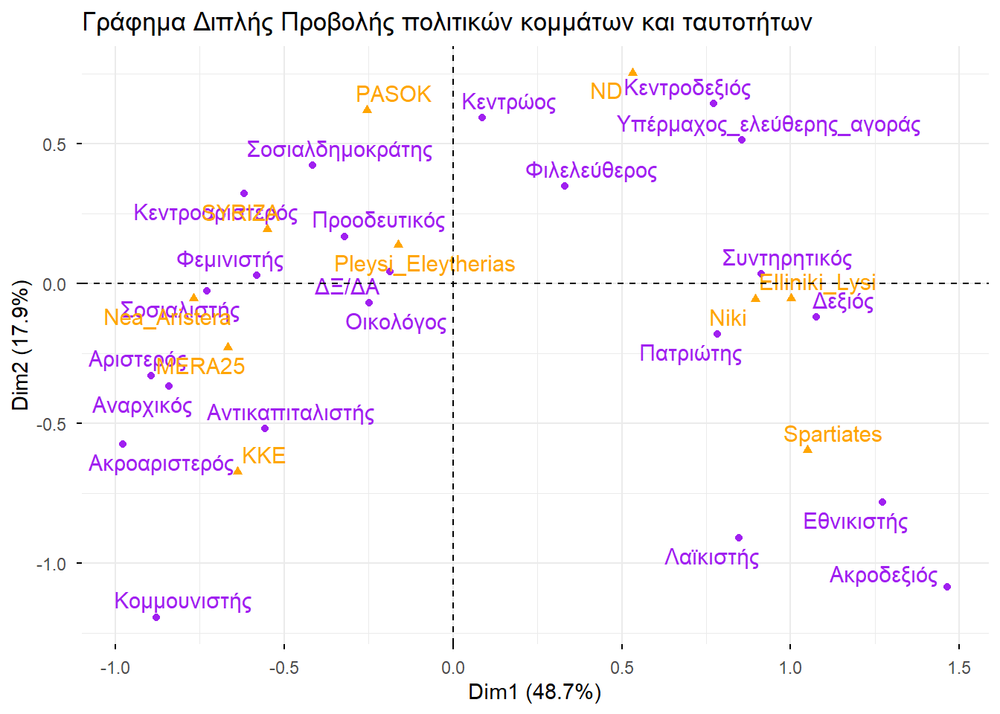
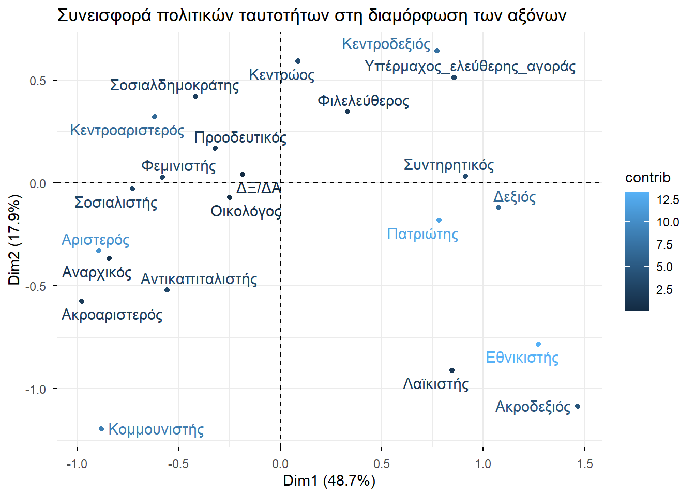

# Δημιουρία στηλών
politiki_taytotita <- c(
"Πατριώτης", "Κεντρώος", "Προοδευτικός", "Κεντροδεξιός",
"Κεντροαριστερός", "Φιλελεύθερος", "Οικολόγος", "Αριστερός",
"Φεμινιστής", "Σοσιαλδημοκράτης", "Υπέρμαχος_ελεύθερης_αγοράς",
"Δεξιός", "Συντηρητικός", "Σοσιαλιστής", "Εθνικιστής",
"Αντικαπιταλιστής", "Κομμουνιστής", "Αναρχικός",
"Ακροδεξιός", "Ακροαριστερός", "Λαϊκιστής", "ΔΞ/ΔΑ"
)
synolo <- c(
23, 20, 20, 18, 17, 15, 11, 10, 8, 8, 8, 8, 7, 6, 5, 4, 4, 2, 1, 1, 1, 6
)
ilikia17_34 <- c(
28, 19, 30, 16, 19, 26, 15, 15, 16, 11, 14, 12, 16, 10, 9, 9, 4, 3, 2, 2, 2, 5
)
ilikia35_54 <- c(
27, 19, 22, 17, 14, 15, 10, 8, 8, 9, 9, 9, 7, 4, 7, 3, 4, 2, 2, 1, 1, 8
)
ilikia55ano <- c(
17, 22, 15, 19, 19, 10, 10, 10, 6, 6, 5, 5, 3, 5, 3, 3, 4, 1, 0, 1, 0, 4
)
ND <- c(
20, 29, 19, 43, 4, 28, 9, 0, 6, 4, 15, 11, 6, 1, 0, 0, 0, 0, 0, 0, 0, 3
)
SYRIZA <- c(
9, 14, 34, 3, 49, 4, 11, 29, 11, 7, 2, 1, 1, 11, 1, 6, 2, 2, 0, 1, 1, 3
)
PASOK <- c(
13, 39, 25, 7, 43, 11, 14, 4, 9, 30, 6, 1, 2, 14, 0, 1, 0, 1, 0, 0, 1, 2
)
KKE <- c(
12, 10, 18, 2, 11, 8, 9, 32, 9, 3, 0, 0, 4, 12, 1, 16, 40, 5, 0, 4, 2, 5
)
Spartiates <- c(
54, 8, 8, 8, 0, 12, 19, 0, 0, 4, 8, 19, 0, 0, 46, 4, 0, 0, 15, 0, 8, 0
)
Elliniki_Lysi <- c(
52, 8, 9, 19, 3, 9, 1, 1, 0, 0, 7, 15, 18, 1, 18, 0, 0, 0, 3, 0, 2, 4
)
Niki <- c(
71, 12, 8, 17, 3, 7, 5, 0, 5, 3, 7, 27, 29, 2, 15, 7, 0, 0, 2, 0, 0, 3
)
Pleysi_Eleytherias <- c(
29, 19, 35, 3, 23, 10, 19, 10, 26, 13, 0, 6, 3, 3, 6, 6, 3, 3, 0, 0, 0, 16
)
Nea_Aristera <- c(
4, 4, 27, 2, 37, 4, 27, 57, 24, 16, 0, 0, 2, 22, 0, 14, 0, 6, 0, 6, 0, 2
)
MERA25 <- c(
12, 5, 29, 2, 24, 7, 22, 37, 29, 12, 0, 2, 0, 15, 0, 22, 12, 5, 0, 10, 0, 7
)
Aristera_Kentroaristera <- c(
10, 6, 30, 0, 48, 5, 16, 31, 16, 15, 2, 0, 0, 15, 0, 11, 11, 5, 0, 3, 1, 1
)
# Δημιουργία του dataframe
prothesiPsifoy <- data.frame(
politiki_taytotita,
synolo,
ilikia17_34,
ilikia35_54,
ilikia55ano,
ND,
SYRIZA,
PASOK,
KKE,
Spartiates,
Elliniki_Lysi,
Niki,
Pleysi_Eleytherias,
Nea_Aristera,
MERA25,
Aristera_Kentroaristera
)Ανάλυση Αντιστοιχίας
1 Παρουσίαση δεδομένων
Στην παρούσα ενότητα θα εξετάσουμε την πρόθεση ψήφου διαφόρων ανθρώπων σε συνδυασμό με το πού κατατάσσουν τον εαυτό τους πολιτικά. Αντλήσαμε δεδομένα από το Ινστιτούτο Εναλλακτικών Ιδεών και Πολιτικών - Ένα και με αυτά φτιάξαμε τον πίνακα δεδομένων prothesiPsifoy. Η διαδικασία καταχώρησης θεωρείται γνωστή και δεν αναλύεται παραπάνω.
Ας δούμε κι αυτό που φτιάξαμε:
| politiki_taytotita | synolo | ilikia17_34 | ilikia35_54 | ilikia55ano | ND | SYRIZA | PASOK | KKE | Spartiates | Elliniki_Lysi | Niki | Pleysi_Eleytherias | Nea_Aristera | MERA25 | Aristera_Kentroaristera |
|---|---|---|---|---|---|---|---|---|---|---|---|---|---|---|---|
| Πατριώτης | 23 | 28 | 27 | 17 | 20 | 9 | 13 | 12 | 54 | 52 | 71 | 29 | 4 | 12 | 10 |
| Κεντρώος | 20 | 19 | 19 | 22 | 29 | 14 | 39 | 10 | 8 | 8 | 12 | 19 | 4 | 5 | 6 |
| Προοδευτικός | 20 | 30 | 22 | 15 | 19 | 34 | 25 | 18 | 8 | 9 | 8 | 35 | 27 | 29 | 30 |
| Κεντροδεξιός | 18 | 16 | 17 | 19 | 43 | 3 | 7 | 2 | 8 | 19 | 17 | 3 | 2 | 2 | 0 |
| Κεντροαριστερός | 17 | 19 | 14 | 19 | 4 | 49 | 43 | 11 | 0 | 3 | 3 | 23 | 37 | 24 | 48 |
| Φιλελεύθερος | 15 | 26 | 15 | 10 | 28 | 4 | 11 | 8 | 12 | 9 | 7 | 10 | 4 | 7 | 5 |
| Οικολόγος | 11 | 15 | 10 | 10 | 9 | 11 | 14 | 9 | 19 | 1 | 5 | 19 | 27 | 22 | 16 |
| Αριστερός | 10 | 15 | 8 | 10 | 0 | 29 | 4 | 32 | 0 | 1 | 0 | 10 | 57 | 37 | 31 |
| Φεμινιστής | 8 | 16 | 8 | 6 | 6 | 11 | 9 | 9 | 0 | 0 | 5 | 26 | 24 | 29 | 16 |
| Σοσιαλδημοκράτης | 8 | 11 | 9 | 6 | 4 | 7 | 30 | 3 | 4 | 0 | 3 | 13 | 16 | 12 | 15 |
| Υπέρμαχος_ελεύθερης_αγοράς | 8 | 14 | 9 | 5 | 15 | 2 | 6 | 0 | 8 | 7 | 7 | 0 | 0 | 0 | 2 |
| Δεξιός | 8 | 12 | 9 | 5 | 11 | 1 | 1 | 0 | 19 | 15 | 27 | 6 | 0 | 2 | 0 |
| Συντηρητικός | 7 | 16 | 7 | 3 | 6 | 1 | 2 | 4 | 0 | 18 | 29 | 3 | 2 | 0 | 0 |
| Σοσιαλιστής | 6 | 10 | 4 | 5 | 1 | 11 | 14 | 12 | 0 | 1 | 2 | 3 | 22 | 15 | 15 |
| Εθνικιστής | 5 | 9 | 7 | 3 | 0 | 1 | 0 | 1 | 46 | 18 | 15 | 6 | 0 | 0 | 0 |
| Αντικαπιταλιστής | 4 | 9 | 3 | 3 | 0 | 6 | 1 | 16 | 4 | 0 | 7 | 6 | 14 | 22 | 11 |
| Κομμουνιστής | 4 | 4 | 4 | 4 | 0 | 2 | 0 | 40 | 0 | 0 | 0 | 3 | 0 | 12 | 11 |
| Αναρχικός | 2 | 3 | 2 | 1 | 0 | 2 | 1 | 5 | 0 | 0 | 0 | 3 | 6 | 5 | 5 |
| Ακροδεξιός | 1 | 2 | 2 | 0 | 0 | 0 | 0 | 0 | 15 | 3 | 2 | 0 | 0 | 0 | 0 |
| Ακροαριστερός | 1 | 2 | 1 | 1 | 0 | 1 | 0 | 4 | 0 | 0 | 0 | 0 | 6 | 10 | 3 |
| Λαϊκιστής | 1 | 2 | 1 | 0 | 0 | 1 | 1 | 2 | 8 | 2 | 0 | 0 | 0 | 0 | 1 |
| ΔΞ/ΔΑ | 6 | 5 | 8 | 4 | 3 | 3 | 2 | 5 | 0 | 4 | 3 | 16 | 2 | 7 | 1 |
Βλέπουμε ότι κάθε γραμμή αντιστοιχεί σε κάποια πολιτική ταυτότητα. Στόχος μας θα είναι να εξετάσουμε αν υπάρχουν κάποια πρότιμα επιλογής, κάποια μοτίβα στους ψηφοφόρους. Έτσι, στην προκειμένη περίπτωση, εκτός από αισθητικά ωραίο, είναι και πρακτικά (για τη μελέτη μας) αναγκαίο οι γραμμές να έχουν τα ονόματα των αντίστοιχων πολιτικών ταυτοτήτων, αντί να είναι απλά αριθμημένες σε αύξουσα σειρά.
Αυτό θα το πετύχουμε μέσω της συνάρτησης rownames(). Αν έχουμε μια λίστα με λέξεις 💌💌💌, τότε γράφοντας rownames(💌💌💌), οι γραμμές μας αποκτάνε τα ονόματα που αναφέρει η λίστα 💌💌💌.
Έτσι γράφουμε:
rownames(prothesiPsifoy) <- prothesiPsifoy$politiki_taytotitaΚι έχουμε πλέον τον κάτωθι πίνακα δεδομένων:
| politiki_taytotita | synolo | ilikia17_34 | ilikia35_54 | ilikia55ano | ND | SYRIZA | PASOK | KKE | Spartiates | Elliniki_Lysi | Niki | Pleysi_Eleytherias | Nea_Aristera | MERA25 | Aristera_Kentroaristera | |
|---|---|---|---|---|---|---|---|---|---|---|---|---|---|---|---|---|
| Πατριώτης | Πατριώτης | 23 | 28 | 27 | 17 | 20 | 9 | 13 | 12 | 54 | 52 | 71 | 29 | 4 | 12 | 10 |
| Κεντρώος | Κεντρώος | 20 | 19 | 19 | 22 | 29 | 14 | 39 | 10 | 8 | 8 | 12 | 19 | 4 | 5 | 6 |
| Προοδευτικός | Προοδευτικός | 20 | 30 | 22 | 15 | 19 | 34 | 25 | 18 | 8 | 9 | 8 | 35 | 27 | 29 | 30 |
| Κεντροδεξιός | Κεντροδεξιός | 18 | 16 | 17 | 19 | 43 | 3 | 7 | 2 | 8 | 19 | 17 | 3 | 2 | 2 | 0 |
| Κεντροαριστερός | Κεντροαριστερός | 17 | 19 | 14 | 19 | 4 | 49 | 43 | 11 | 0 | 3 | 3 | 23 | 37 | 24 | 48 |
| Φιλελεύθερος | Φιλελεύθερος | 15 | 26 | 15 | 10 | 28 | 4 | 11 | 8 | 12 | 9 | 7 | 10 | 4 | 7 | 5 |
| Οικολόγος | Οικολόγος | 11 | 15 | 10 | 10 | 9 | 11 | 14 | 9 | 19 | 1 | 5 | 19 | 27 | 22 | 16 |
| Αριστερός | Αριστερός | 10 | 15 | 8 | 10 | 0 | 29 | 4 | 32 | 0 | 1 | 0 | 10 | 57 | 37 | 31 |
| Φεμινιστής | Φεμινιστής | 8 | 16 | 8 | 6 | 6 | 11 | 9 | 9 | 0 | 0 | 5 | 26 | 24 | 29 | 16 |
| Σοσιαλδημοκράτης | Σοσιαλδημοκράτης | 8 | 11 | 9 | 6 | 4 | 7 | 30 | 3 | 4 | 0 | 3 | 13 | 16 | 12 | 15 |
| Υπέρμαχος_ελεύθερης_αγοράς | Υπέρμαχος_ελεύθερης_αγοράς | 8 | 14 | 9 | 5 | 15 | 2 | 6 | 0 | 8 | 7 | 7 | 0 | 0 | 0 | 2 |
| Δεξιός | Δεξιός | 8 | 12 | 9 | 5 | 11 | 1 | 1 | 0 | 19 | 15 | 27 | 6 | 0 | 2 | 0 |
| Συντηρητικός | Συντηρητικός | 7 | 16 | 7 | 3 | 6 | 1 | 2 | 4 | 0 | 18 | 29 | 3 | 2 | 0 | 0 |
| Σοσιαλιστής | Σοσιαλιστής | 6 | 10 | 4 | 5 | 1 | 11 | 14 | 12 | 0 | 1 | 2 | 3 | 22 | 15 | 15 |
| Εθνικιστής | Εθνικιστής | 5 | 9 | 7 | 3 | 0 | 1 | 0 | 1 | 46 | 18 | 15 | 6 | 0 | 0 | 0 |
| Αντικαπιταλιστής | Αντικαπιταλιστής | 4 | 9 | 3 | 3 | 0 | 6 | 1 | 16 | 4 | 0 | 7 | 6 | 14 | 22 | 11 |
| Κομμουνιστής | Κομμουνιστής | 4 | 4 | 4 | 4 | 0 | 2 | 0 | 40 | 0 | 0 | 0 | 3 | 0 | 12 | 11 |
| Αναρχικός | Αναρχικός | 2 | 3 | 2 | 1 | 0 | 2 | 1 | 5 | 0 | 0 | 0 | 3 | 6 | 5 | 5 |
| Ακροδεξιός | Ακροδεξιός | 1 | 2 | 2 | 0 | 0 | 0 | 0 | 0 | 15 | 3 | 2 | 0 | 0 | 0 | 0 |
| Ακροαριστερός | Ακροαριστερός | 1 | 2 | 1 | 1 | 0 | 1 | 0 | 4 | 0 | 0 | 0 | 0 | 6 | 10 | 3 |
| Λαϊκιστής | Λαϊκιστής | 1 | 2 | 1 | 0 | 0 | 1 | 1 | 2 | 8 | 2 | 0 | 0 | 0 | 0 | 1 |
| ΔΞ/ΔΑ | ΔΞ/ΔΑ | 6 | 5 | 8 | 4 | 3 | 3 | 2 | 5 | 0 | 4 | 3 | 16 | 2 | 7 | 1 |
Προφανώς, πλέον η στήλη politiki_taytotita δεν μας χρειάζεται, επομένως θα την αποσύρουμε από τον πίνακα. Μαζί θα αποσύρουμε και τις στήλες synolo, Aristera_Kentroaristera, ilikia17_34, ilikia35_54 και ilikia55ano, που δεν τις θέλουμε στην ανάλυσή μας. Γράφουμε λοιπόν:
prothesiPsifoy <- prothesiPsifoy[, !colnames(prothesiPsifoy) %in% c("politiki_taytotita", "synolo", "Aristera_Kentroaristera", "ilikia17_34", "ilikia35_54", "ilikia55ano")]Έτσι, έχουμε:
| ND | SYRIZA | PASOK | KKE | Spartiates | Elliniki_Lysi | Niki | Pleysi_Eleytherias | Nea_Aristera | MERA25 | |
|---|---|---|---|---|---|---|---|---|---|---|
| Πατριώτης | 20 | 9 | 13 | 12 | 54 | 52 | 71 | 29 | 4 | 12 |
| Κεντρώος | 29 | 14 | 39 | 10 | 8 | 8 | 12 | 19 | 4 | 5 |
| Προοδευτικός | 19 | 34 | 25 | 18 | 8 | 9 | 8 | 35 | 27 | 29 |
| Κεντροδεξιός | 43 | 3 | 7 | 2 | 8 | 19 | 17 | 3 | 2 | 2 |
| Κεντροαριστερός | 4 | 49 | 43 | 11 | 0 | 3 | 3 | 23 | 37 | 24 |
| Φιλελεύθερος | 28 | 4 | 11 | 8 | 12 | 9 | 7 | 10 | 4 | 7 |
| Οικολόγος | 9 | 11 | 14 | 9 | 19 | 1 | 5 | 19 | 27 | 22 |
| Αριστερός | 0 | 29 | 4 | 32 | 0 | 1 | 0 | 10 | 57 | 37 |
| Φεμινιστής | 6 | 11 | 9 | 9 | 0 | 0 | 5 | 26 | 24 | 29 |
| Σοσιαλδημοκράτης | 4 | 7 | 30 | 3 | 4 | 0 | 3 | 13 | 16 | 12 |
| Υπέρμαχος_ελεύθερης_αγοράς | 15 | 2 | 6 | 0 | 8 | 7 | 7 | 0 | 0 | 0 |
| Δεξιός | 11 | 1 | 1 | 0 | 19 | 15 | 27 | 6 | 0 | 2 |
| Συντηρητικός | 6 | 1 | 2 | 4 | 0 | 18 | 29 | 3 | 2 | 0 |
| Σοσιαλιστής | 1 | 11 | 14 | 12 | 0 | 1 | 2 | 3 | 22 | 15 |
| Εθνικιστής | 0 | 1 | 0 | 1 | 46 | 18 | 15 | 6 | 0 | 0 |
| Αντικαπιταλιστής | 0 | 6 | 1 | 16 | 4 | 0 | 7 | 6 | 14 | 22 |
| Κομμουνιστής | 0 | 2 | 0 | 40 | 0 | 0 | 0 | 3 | 0 | 12 |
| Αναρχικός | 0 | 2 | 1 | 5 | 0 | 0 | 0 | 3 | 6 | 5 |
| Ακροδεξιός | 0 | 0 | 0 | 0 | 15 | 3 | 2 | 0 | 0 | 0 |
| Ακροαριστερός | 0 | 1 | 0 | 4 | 0 | 0 | 0 | 0 | 6 | 10 |
| Λαϊκιστής | 0 | 1 | 1 | 2 | 8 | 2 | 0 | 0 | 0 | 0 |
| ΔΞ/ΔΑ | 3 | 3 | 2 | 5 | 0 | 4 | 3 | 16 | 2 | 7 |
2 Γράφημα διπλής προβολής
Τώρα που ο πίνακας δεδομένων ήρθε στη μορφή που θέλαμε, πάμε να εγκαταστήσουμε τα πακέτα που θα κάνουν τη δουλειά που θέλουμε. Πριν, όμως, θα επισημάνουμε ένα πρόβλημα, το οποίο για διδακτικούς λόγους θα αγνοήσουμε εδώ:
- Τα στοιχεία της κάθε στήλης δεν είναι ποσοστά επί του συνόλου ή απόλυτες συχνότητες. Είναι ποσοστά επί των ψηφοφόρων του αντίστοιχου κόμματος.
Εν πάση περιπτώσει, είπαμε ότι θα το αγνωήσουμε, οπότε πάμε στα πακέτα μας. Αυτά είναι τα FactoMineR και factoextra. Γράφουμε, λοιπόν, τα παρακάτω.
if(!require(FactoMineR)){
install.packages("FactoMineR")
library(FactoMineR)
}
if(!require(factoextra)){
install.packages("factoextra")
library(factoextra)
}Ο πυρήνας της δουλειάς μας είναι τα αποτελέσματα της συνάρτησης CA(). Έχοντας έναν πίνακα δεδομένων 💻💻💻, σαν τον prothesiPsifoy και γράφοντας CA(💻💻💻), εξάγεται το παρακάτω γράφημα, το οποίο αποκαλούμε γράφημα διπλής προβολής, και κάποια αποτελέσματα που αυτή τη στιγμή δεν φαίνονται και δεν θα μας απασχολήσουν παραπάνω. Τα εν λόγω αποτελέσματα τα αποθηκεύουμε με το όνομα apotelesmataCORA, ώστε να τα χρησιμοποιήσουμε και μετά.
apotelesmataCORA <- CA(prothesiPsifoy)
Πριν εμβαθύνουμε στο διάγραμμά μας, να πούμε ότι μπορούμε να το σχεδιάσουμε και χρησιμοποιώντας τη συνάρτηση fviz_ca_biplot() ως ακολούθως:
fviz_ca_biplot(apotelesmataCORA,
repel = TRUE, # Αποτρέπει την επικάλυψη ετικετών
col.row = "purple", # Χρώμα για τις γραμμές (πολιτικές ταυτότητες)
col.col = "orange", # Χρώμα για τις στήλες (κόμματα)
title = "Γράφημα Διπλής Προβολής πολιτικών κομμάτων και ταυτοτήτων"
)
Για να ερμηνεύσουμε τι σημαίνει η θέση σε αυτό το σύστημα συντεταγμένων, θα πρέπει να νοηματοδοτήσουμε τις αποστάσεις σε αυτό. Το «ζουμί» είναι στις σχέσεις μεταξύ των διαφορετικών χρωμάτων. Αυτό που εξετάζουμε όταν κοιτάζουμε δύο διαφορετικά χρώματα (κόμμα με πολιτική ταυτότητα εν προκειμένω) είναι με τι γωνία βλέπει το ένα και το άλλο ένας παρατηρητής που είναι στημένος στην αρχή των αξόνων (έστω Ο), εκεί που διασταυρώνεται ο οριζόντιος με τον κατακόρυφο άξονα.
Ας το δούμε λίγο πιο συγκεκριμένα!
Για παράδειγμα η γωνία που σχηματίζουν οι γραμμές Ο-
NDκαι Ο-κεντροδεξιόςείναι πολύ μιτερή (\(<90^\circ\)) και με μεγάλες πλευρές. Αυτό δηλώνει θετική συσχέτιση (έλξη). Δηλαδή το ότι μιλάμε για κόμμα ΝΔ, σημαίνει ότι το ποσοστό των κεντροδεξιών αναπηδά απότομα προς τα πάνω. Αλλά και ανάποδα! Αν εξετάσουμε τους κεντροδεξιούς, τα ποσοστά της ΝΔ έχουν εμφανή διαφορά προς τα πάνω από το μέσο ποσοστό των κομμάτων.Αντίθετα, η γωνία που σχηματίζουν οι γραμμές Ο-
SYRIZAκαι Ο-εθνικιστήςείναι πολύ ίσια (\(\approx 180^\circ\)) και με μεγάλες πλευρές. Αυτό δηλώνει αρνητική συσχέτιση (άπωση). Δηλαδή στους ψηφοφόρους του ΣΥΡΙΖΑ το να είσαι εθνικιστής είναι εμφανώς κάτω του μέσου όρου των πολιτικών ταυτοτήτων. Αντίστροφα αν το δούμε, εστιάζοντας στους εθνικιστές, οι συριζέοι έχουν μια έντονη προς τα κάτω απόκλιση από αυτό που θα αναμέναμε (μέση τιμή κομμάτων).Έχουμε, όμως, και τις ενδιάμεσες γωνίες, αυτές των \(\approx 90^\circ\). Π.χ. οι γραμμές Ο-
PASOKκαι Ο-φιλελεύθεροςείναι σχεδόν κάθετες. Αυτό δξηλώνει ότι δεν έχουν καμία συσχέτιση. Η πολιτική ταυτότητα «φιλελεύθερος» εμφανίζεται στο κόμμα με τη συχνότητα του μέσου όρου.Τέλος, στην περίπτωση που έχουμε μικρές πλευρές, δηλαδή μικρή απόσταση από το Ο, μιλάμε για κόμμα ή πολιτική ταυτότητα που δεν ξεχωρίζει από το μέσο όρο. Δηλαδή οι ΔΞ/ΔΑ είναι κοντά στον μέσο όρο για κάθε κόμμα. Π.χ. κοιτάζοντας το ΚΚΕ, αυτοί που δηλώνουν ότι δεν έχουν κάποια πολιτική ταυτότητα δεν έχουν να επιδείξουν κάποια έντονη ποσοστική διαφορά προς τα πάνω ή προς τα κάτω σε σχέση με τη μέση τιμή όλων των πολιτικών ταυτοτήτων.
Τι σημαίνουν τα παραπάνω για την περίπτωση που μελετάμε το ιδιο χρώμα (κόμμα με κόμμα ή ταυτότητα με ταυτότητα); Ας πάρουμε, για παράδειγμα, τις πολιτικές ταυτότητες «εθνικιστής» και «ακροδεξιός». Αυτές απέγουν πολύ σχεδόν το ίδιο από το κέντρο Ο και προς την ίδια κατεύθυνση. Αυτό σημαίνει ότι στην περίπτωση που υφίσταται μία εξ αυτών, τότε επηρρεάζουν εξίσου (θετικά, αρνητικά ή καθόλου) τις πιθανότητες εμφάνισης του εκάστοτε κόμματος. Αλλά και αντίστροφα! Εστιάζοντας σε ένα οποιοδήποτε κόμμα (π.χ. ΣΥΡΙΖΑ) η πολιτική ταυτότητα «εθνικιστής» έχει παρόμοια κατάταξη (πάνω ή κάτω από τον μέσο όρο όλων των πολιτικών ταυτοτήτων) με την πολιτική ταυτότητα «ακροδεξιός».
Κλείνοντας αυτή την ενότητα μπορούμε να πούμε πως οι δύο άξονες έρχονται για να ποσοτικοποιήσουν τις ζώνες επιρροής. Εν προκειμένω παρουσιάζουμε δύο ποιοτικά διαφορετικά συστήματα ζωνών επιρροής, αυτό που προσδιορίζεται από τον οριζόντιο άξονα κι αυτό από τον κατακόρυφο. Κάθε σημείο του επιπέδου είναι απλά μια ποσοτική έκφραση αυτών των δύο. Ας το δούμε και λίγο καλύτερα:
Καταρχάς, βλέπουμε δύο σχεδόν κατακόρυφες στήλες, η μία που περιέχει τα κόμματα της αριστεράς, η άλλη της δεξιάς. Αυτό που συμπεραίνουμε έιναι ότι ο οριζόντιος άξονας κατηγοριοποιεί τα κόμματα και τις πολιτικές ταυτότητες βάσει απλά του σχήματος αριστερά-δεξιά. Για παράδειγμα το ΚΚΕ φαίνεται να ανήκει στο ακραίο τμήμα της αριστεράς, η ΝΔ στο ακραίο σημείο της δεξιάς, ενώ η Πλεύση Ελευθερίας σε κάτι ενδιάμεσο, σε κάτι πιο κοντά στο μέσο όρο όλων.
Ο κατακόρυφος άξονας που είδαμε ότι χωρίζει σε δύο αντιδιαμετρικά μέρη τα κόμματα, ο ίδιος χωρίζει και τις πολιτικές ταυτότητες. Πολιτικές ταυτότητες που έχουν να κάνουν με την αριστερά (λίγο-πολύ) είναι στα αριστερά και με την δεξιά (λίγο-πολύ) είναι στα δεξιά. Αυτός είναι ένας ακόμα λόγος που μάς κάνει να πιστεύουμε πως ο οριζόντιος άξονας είναι το φάσμα αριστερά-δεξιά με τις αποχρώσεις του.
Ο οριζόντιος άξονας με τη σειρά του φαίνεται να χωρίζει τα κόμματα, όπως και τις πολιτικές ταυτότητες σε ένα συστημικο μέρος (το άνω μέρος) κι ένα ανατρεπτικό (το κάτω μέρος). Συνεπώς, τα κόμματα και οι πολιτικές ταυτότητες που είναι ακριβώς πάνω (ή εκεί κοντά) στην οριζόντια διαχωριστική γραμμή είναι γύρω στο μέσο όρο, είναι αυτά που δεν διακρίνονται για τις ανατρεπτικές ή συστημικές απόψεις τους.
Πόσο καλά καταγοριοποιούνται κόμματα και πολιτικές ταυτότητες από δύο μόνο άξονες; Ας μην ξεχνάμε πως είχαμε 10 κόμματα και 22 πολιτικές ταυτότητες, ήτοι 220 πιθανούς πολιτικούς χαρακτηρισμούς. Αυτό έρχονται να μας το αποκαλύψουν τα ποσοστά που αναγράφονται στους άξονες. Το γράφημα διπλής προβολής μάς λέει ότι η μία διάσταση (Dim 1) αρκεί για να εξηγήσει το 48.66% των δεδομένων μας. Η επιπλέον διάσταση (Dim 2) είναι για να εξηγήσει το επιπλέον 17,90%. Συνολικά εξηγούν το 66.56% των δεδομένων μας.
Αν στον αναγνώστη το 66.56% φαντάζει φτωχό, μπορεί να προσθέσει καινούριες διαστάσεις. Το πόσες θα πετύχουν την ακρίβεια που επιθυμεί, θα του το αποκαλύψει η συνάρτηση fviz_eig(), η οποία φτιάχνει το λεγόμενο γράφημα παραγόντων. Έχοντας ✍️✍️✍️ τα αποτελέσματα της 1ης ανάλυσης που κάναμε (εδώ έχει όνομα apotelesmataCORA) και γράφοντας fviz_eig(✍️✍️✍️, addlabels = TRUE), βλέπουμε πόση πληροφορία προσθέτει η κάθε επιπλέον διάσταση και προσθέτουμε τόσες, όσες απαιτεί η ακρίβεια που επιθυμούμε.
# Scree plot
fviz_eig(apotelesmataCORA, addlabels = TRUE)Warning in geom_bar(stat = "identity", fill = barfill, color = barcolor, :
Ignoring empty aesthetic: `width`.
Έτσι, η τρίτη διάσταση δίνει ένα ακόμα 13.1% πληροφορίας. Συνολικά με τρεις διαστάσεις τα δεδομένα μας περιγράφονται κατά 79.7%, κάτι αρκετά αξιοπρεπές. Γενικώς επιδιώκουμε κάτι παραπάνω από 50-70%, οπότε δεδομένου ότι οι δύο διαστάσεις είναι πολύ βολικότερες από τις τρεις, θα κρατήσουμε την αρχική μας επιλογή, έστω κι αν η ακρίβεια που δίνει είναι 66.56%.
3 Αξιολόγηση γραφήματος διπλής προβολής
Ένα θέμα που μπορεί να μας απασχολήσει, είναι το πόσο καλά περιγράφονται τα κόμματα και οι πολιτικές ταυτότητες από τους άξονες. Δεν είναι σε κάθε κόμμα και σε κάθε πολιτική ταυτότητα η ίδια απάντηση. Σε αυτό θα μας βοηθήσουν τα παρακάτω γραφήματα (βλ. cos2).
fviz_ca_row(apotelesmataCORA, repel = TRUE,
col.row = "cos2",
title = "Ποιες πολιτικές ταυτότητες εκπροσωπούνται καλά;"
)
Βλέπουμε, λοιπόν, ότι οι πολιτικές ταυτότητες (βλ. col.row) «δεξιός» και «αναρχικός» απεικονίζονται αξιόπιστα, ενώ όχι πολύ καλά οι αναποφάσιστοι (ΔΞ/ΔΑ). Ας δούμε και τα κόμματα (βλ. col.col:
fviz_ca_col(apotelesmataCORA, repel = TRUE,
col.col = "cos2",
title = "Ποια πολιτικά κόμματα εκπροσωπούνται καλά;"
)
Η Πλεύση Ελευθερίας δεν απεικονίζεται καθόλου καλά, ενώ το ΜΕΡΑ25 είναι εντάξει.
4 Εμβάθυνση στην ερμηνεία του γραφήματος διπλής προβολής
Τώρα θα κοιτάξουμε λίγο προσεκτικότερα τους άξονες. Η ερμηνεία τους άπτεται στην φαντασία του ερευνητή, οπότε εδώ θα την υποβοηθήσουμε. Ποιες πολιτικές ταυτότητες συνείσφεραν περισσότερο στον σχηματισμό των αξόνων; Σε αυτό θα μάς βοηθήσουν τα παρακάτω γραφήματα (βλ. contrib).
fviz_ca_row(apotelesmataCORA, repel = TRUE,
col.row = "contrib",
title = "Συνεισφορά πολιτικών ταυτοτήτων στη διαμόρφωση των αξόνων"
)
Στη διαμόρφωση των αξόνων βλέπουμε ότι συνείσφεραν περισσότερο οι πολιτικές ταυτότητες (βλ. col.row) «πατριώτης» και «αριστερός», παρά η πολιτική ταυτότητα «φεμινιστής». Ας δούμε και κάτι αντίστοιχο για τα κόμματα (βλ. col.col)
fviz_ca_col(apotelesmataCORA, repel = TRUE,
col.col = "contrib",
title = "Συνεισφορά κομμάτων στη διαμόρφωση των αξόνων"
)
Βλέπουμε ότι στη διαμόρφωση των αξόνων συνείσφεραν περισσότερο οι Σπαρτιάτες, παρά η ΝΔ. Αυτό, ίσως, καταδεικνύει την ανεπάρκεια των αρχικών μας δεδομένων, την οποία και επισημάναμε αρχικά.
Συνολικά ο κώδικας έχει ως εξής.
# Δημιουρία στηλών
politiki_taytotita <- c(
"Πατριώτης", "Κεντρώος", "Προοδευτικός", "Κεντροδεξιός",
"Κεντροαριστερός", "Φιλελεύθερος", "Οικολόγος", "Αριστερός",
"Φεμινιστής", "Σοσιαλδημοκράτης", "Υπέρμαχος_ελεύθερης_αγοράς",
"Δεξιός", "Συντηρητικός", "Σοσιαλιστής", "Εθνικιστής",
"Αντικαπιταλιστής", "Κομμουνιστής", "Αναρχικός",
"Ακροδεξιός", "Ακροαριστερός", "Λαϊκιστής", "ΔΞ/ΔΑ"
)
synolo <- c(
23, 20, 20, 18, 17, 15, 11, 10, 8, 8, 8, 8, 7, 6, 5, 4, 4, 2, 1, 1, 1, 6
)
ilikia17_34 <- c(
28, 19, 30, 16, 19, 26, 15, 15, 16, 11, 14, 12, 16, 10, 9, 9, 4, 3, 2, 2, 2, 5
)
ilikia35_54 <- c(
27, 19, 22, 17, 14, 15, 10, 8, 8, 9, 9, 9, 7, 4, 7, 3, 4, 2, 2, 1, 1, 8
)
ilikia55ano <- c(
17, 22, 15, 19, 19, 10, 10, 10, 6, 6, 5, 5, 3, 5, 3, 3, 4, 1, 0, 1, 0, 4
)
ND <- c(
20, 29, 19, 43, 4, 28, 9, 0, 6, 4, 15, 11, 6, 1, 0, 0, 0, 0, 0, 0, 0, 3
)
SYRIZA <- c(
9, 14, 34, 3, 49, 4, 11, 29, 11, 7, 2, 1, 1, 11, 1, 6, 2, 2, 0, 1, 1, 3
)
PASOK <- c(
13, 39, 25, 7, 43, 11, 14, 4, 9, 30, 6, 1, 2, 14, 0, 1, 0, 1, 0, 0, 1, 2
)
KKE <- c(
12, 10, 18, 2, 11, 8, 9, 32, 9, 3, 0, 0, 4, 12, 1, 16, 40, 5, 0, 4, 2, 5
)
Spartiates <- c(
54, 8, 8, 8, 0, 12, 19, 0, 0, 4, 8, 19, 0, 0, 46, 4, 0, 0, 15, 0, 8, 0
)
Elliniki_Lysi <- c(
52, 8, 9, 19, 3, 9, 1, 1, 0, 0, 7, 15, 18, 1, 18, 0, 0, 0, 3, 0, 2, 4
)
Niki <- c(
71, 12, 8, 17, 3, 7, 5, 0, 5, 3, 7, 27, 29, 2, 15, 7, 0, 0, 2, 0, 0, 3
)
Pleysi_Eleytherias <- c(
29, 19, 35, 3, 23, 10, 19, 10, 26, 13, 0, 6, 3, 3, 6, 6, 3, 3, 0, 0, 0, 16
)
Nea_Aristera <- c(
4, 4, 27, 2, 37, 4, 27, 57, 24, 16, 0, 0, 2, 22, 0, 14, 0, 6, 0, 6, 0, 2
)
MERA25 <- c(
12, 5, 29, 2, 24, 7, 22, 37, 29, 12, 0, 2, 0, 15, 0, 22, 12, 5, 0, 10, 0, 7
)
Aristera_Kentroaristera <- c(
10, 6, 30, 0, 48, 5, 16, 31, 16, 15, 2, 0, 0, 15, 0, 11, 11, 5, 0, 3, 1, 1
)
# Δημιουργία του dataframe
prothesiPsifoy <- data.frame(
politiki_taytotita,
synolo,
ilikia17_34,
ilikia35_54,
ilikia55ano,
ND,
SYRIZA,
PASOK,
KKE,
Spartiates,
Elliniki_Lysi,
Niki,
Pleysi_Eleytherias,
Nea_Aristera,
MERA25,
Aristera_Kentroaristera
)
rownames(prothesiPsifoy) <- prothesiPsifoy$politiki_taytotita
prothesiPsifoy <- prothesiPsifoy[, !colnames(prothesiPsifoy) %in% c("politiki_taytotita", "synolo", "Aristera_Kentroaristera", "ilikia17_34", "ilikia35_54", "ilikia55ano")]
if(!require(FactoMineR)){
install.packages("FactoMineR")
library(FactoMineR)
}
if(!require(factoextra)){
install.packages("factoextra")
library(factoextra)
}
apotelesmataCORA <- CA(prothesiPsifoy)
fviz_ca_biplot(apotelesmataCORA,
repel = TRUE, # Αποτρέπει την επικάλυψη ετικετών
col.row = "purple", # Χρώμα για τις γραμμές (πολιτικές ταυτότητες)
col.col = "orange", # Χρώμα για τις στήλες (κόμματα)
title = "Γράφημα Διπλής Προβολής πολιτικών κομμάτων και ταυτοτήτων"
)
fviz_eig(apotelesmataCORA, addlabels = TRUE)
fviz_ca_row(apotelesmataCORA, repel = TRUE,
col.row = "cos2",
title = "Ποιες πολιτικές ταυτότητες εκπροσωπούνται καλά;"
)
fviz_ca_col(apotelesmataCORA, repel = TRUE,
col.col = "cos2",
title = "Ποια πολιτικά κόμματα εκπροσωπούνται καλά;"
)
fviz_ca_row(apotelesmataCORA, repel = TRUE,
col.row = "contrib",
title = "Συνεισφορά πολιτικών ταυτοτήτων στη διαμόρφωση των αξόνων"
)
fviz_ca_col(apotelesmataCORA, repel = TRUE,
col.col = "contrib",
title = "Συνεισφορά κομμάτων στη διαμόρφωση των αξόνων"
)